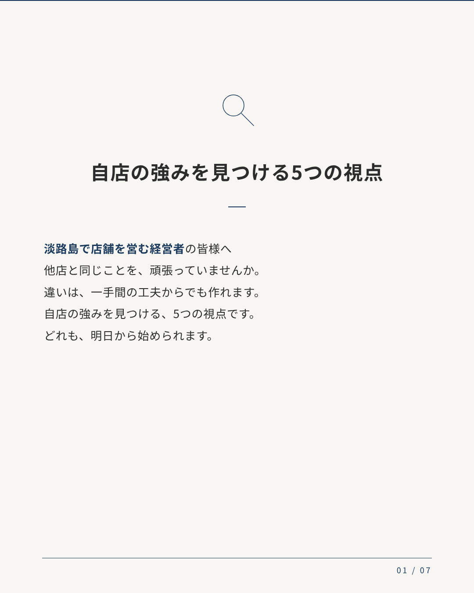
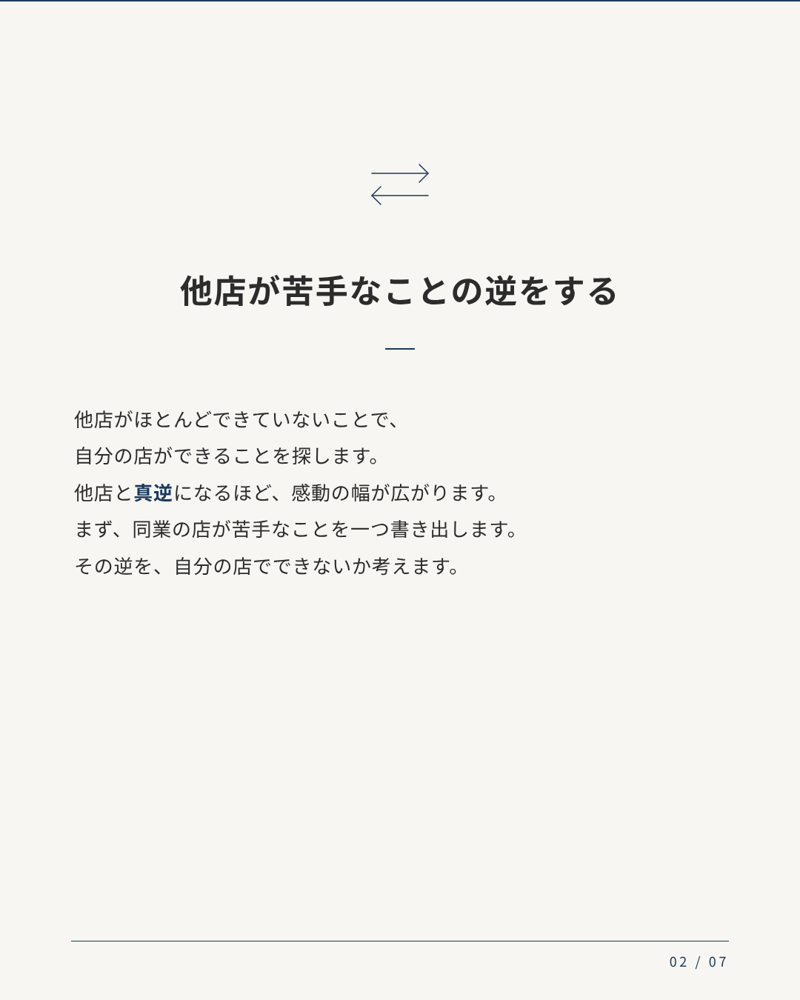
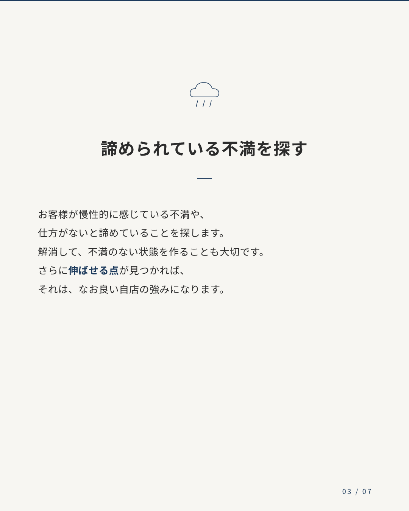
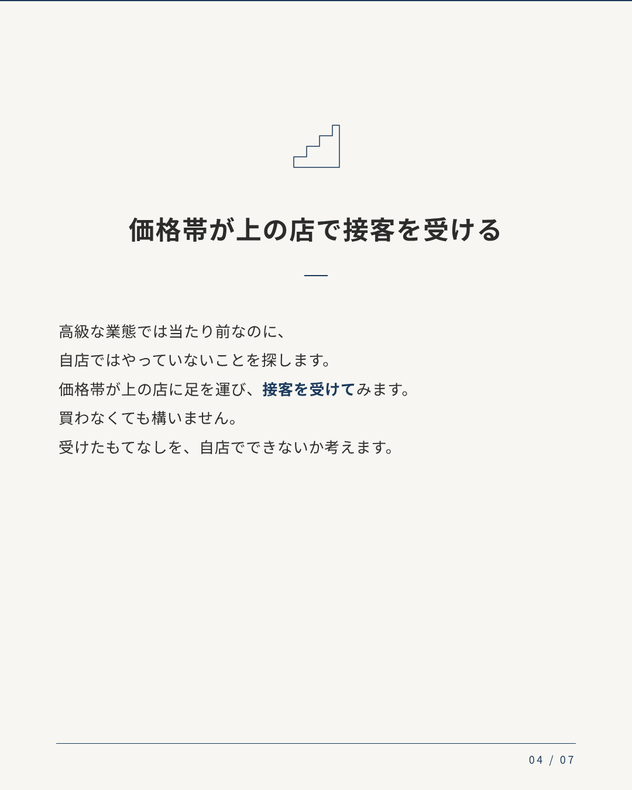
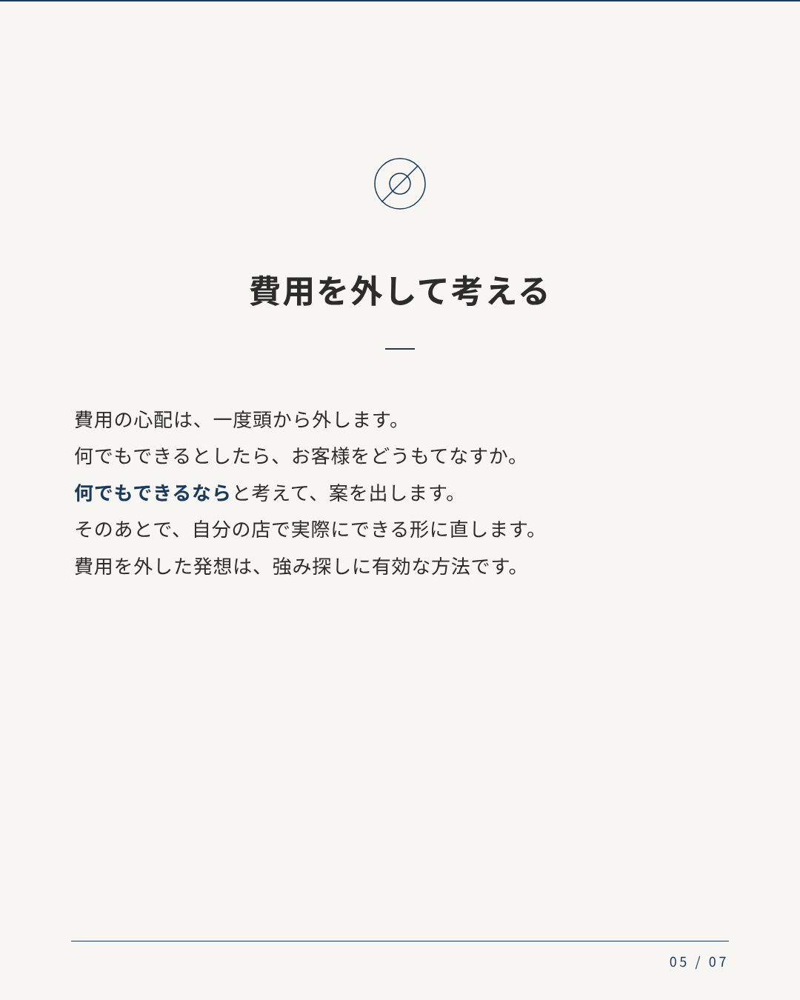
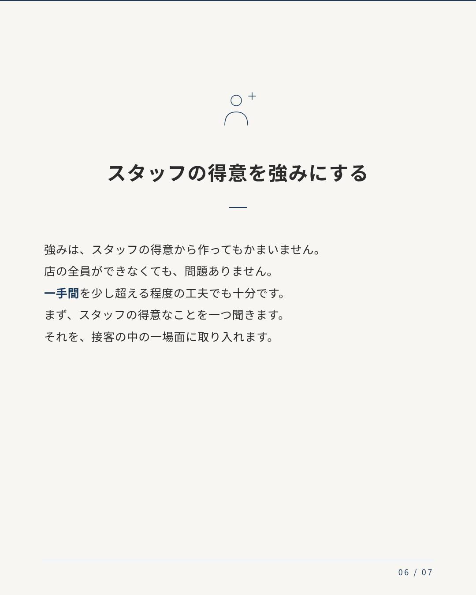
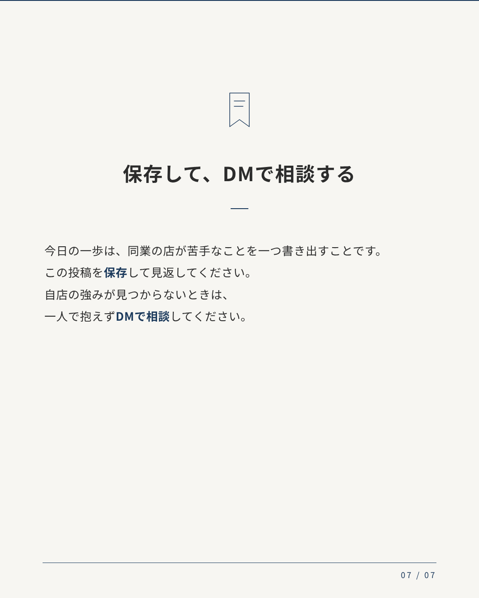

自店の強みを見つける5つの視点







キャプションを見る
淡路島で店舗を営む方へ。 他店と同じことを頑張っていて、違いが出せないと感じていませんか。 自店の強みを見つけるための、5つの視点をまとめました。 1. 他店が苦手なことの逆をする 2. 諦められている不満を探す 3. 価格帯が上の店で接客を受ける 4. 費用を外して考える 5. スタッフの得意を強みにする 今日の一歩は、同業の店が苦手なことを一つ書き出すことです。 保存して見返してください。自店の強みが見つからないときは、DMでご相談ください。 #淡路島 #店舗経営 #小規模店舗 #差別化 #接客 #強みの見つけ方